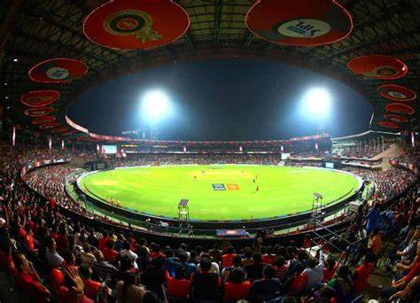

VS
VS 
Match Summary
| England | New Zealand |
|---|---|
| Jos Buttler(C & WK) | Tom Latham(C & WK) |
| Dawid Malan | Will Young |
| Joe Root | Rachin Ravindra |
| Harry Brook | Daryl Mitchell |
| Jonny Bairstow | Devon Conway |
| Liam Livingstone | Glenn Phillips |
| Moeen Ali | Mark Chapman |
| Sam Curran | James Neesham |
| Chris Woakes | Mitchell Santner |
| Adil Rashid | Matt Henry |
| Mark Wood | Trent Boult |
| Ben Stokes | Lockie Ferguson |
Players Details
Scorecard
Player Of The Match: Rachin Ravindra
2.00 PM
Narendra Modi Stadium, Ahmedabad

The Narendra Modi Stadium is an international cricket stadium located in Ahmedabad, Gujarat, a state in west India. With a capacity of 132,000 (total), 114,600 (seated)[15] it is the world's largest stadium.[16] The stadium, owned by the Gujarat Cricket Association, hosts both domestic and international cricket matches.[3][17] It is recognized as one of the world's premier cricket venues.[18] The stadium has hosted several high-profile matches, such as the 2023 One Day International World Cup final.[19] It is named after the 14th Prime Minister of India, Narendra Modi.

Match Summary
| Pakistan | Netherlands |
|---|---|
| Babar Azam(C) | Scott Edwards(C & WK) |
| Imam-ul-Haq | Vikramjit Singh |
| Fakhar Zaman | Max ODowd |
| Mohammad Rizwan(WK) | Colin Ackermann |
| Saud Shakeel | Bas de Leede |
| Iftikhar Ahmed | Teja Nidamanuru |
| Shadab Khan | Saqib Zulfiqar |
| Mohammad Nawaz | Logan van Beek |
| Hasan Ali | Roelof van der Merwe |
| Shaheen Afridi | Aryan Dutt |
| Haris Rauf | Paul van Meekeren |
| Mohammad Wasim Jr | Wesley Barresi |
Players Details
Scorecard
Player Of The Match: Saud Shakeel
2.00 PM
Rajiv Gandhi International Stadium, Hyderabad
The need for a big ground and an exclusive cricket facility necessitated the building of a cricket ground in Uppal, an eastern suburb of Hyderabad. Moreover the earlier venue - the Lal Bahadur Shastri Stadium - was owned by the Sports Authority of Andhra Pradesh, giving the Hyderabad Cricket Association limited control over the ground. Stretched over 16 acres of land, the Rajiv Gandhi International Cricket Stadium did away Hyderabad's reputation of being a high-scoring venue. The ground has had its share of controversy. The first came with the name, which the state government changed to honour a former Indian prime minister. The HCA had to pay out the contractors - Visaka Industries - after whom the stadium was originally named.
Match Summary
| Bangladesh | Afganistan |
|---|---|
| Shakib Al Hasan(C) | Hashmatullah Shahidi(C) |
| Tanzid Hasan | Rahmanullah Gurbaz(WK) |
| Litton Das | Ibrahim Zadran |
| Najmul Hossain Shanto | Rahmat Shah |
| Mehidy Hasan Miraz | Mohammad Nabi/td> |
| Mushfiqur Rahim(WK) | Najibullah Zadran |
| Towhid Hridoy | Azmatullah Omarzai |
| Mahmudullah | Rashid Khan |
| Taskin Ahmed | Mujeeb Ur Rahman |
| Shoriful Islam | Naveen-ul-Haq |
| Mustafizur Rahman | Fazalhaq Farooqi |
| Mahedi Hasan | Noor Ahmad |
Players Details
Scorecard
Player Of The Match: Mehidy Hasan Miraz
10:30 AM
Himachal Pradesh Cricket Association Stadium, Dharamsala
Stunning. Breathtaking. Awesome. The adjectives roll out as one enters the most beautiful ground in India. The Himachal Pradesh Cricket Association [HPCA] Stadium in Dharamsala, with a capacity of 23,000, is as picturesque as the Adelaide Oval and Newlands, if not more. A small and glittering green plate, the ground has a snow-capped background in the form of the Dauladhar hill-range. The mountains add to the serenity of the venue, which lies at an altitude of 1317 metres above sea level. Another impressive feature is its openness and small-sized stands, which allow for winds to sweep across, giving fast bowlers assistance in the air.
 VS
VS
Match Summary
| South Africa | Sri Lanka |
|---|---|
| Temba Bavuma(C) | Dasun Shanaka(C) |
| Quinton de Kock | Kusal Perera |
| Rassie van der Dussen | Pathum Nissanka |
| Aiden Markram | Kusal Mendis(WK) |
| Quinton de Kock | Sadeera Samarawickrama |
| Heinrich Klaasen(WK) | Charith Asalanka |
| David Miller | Dhananjaya de Silva |
| Marco Jansen | Dasun Shanaka |
| Gerald Coetzee | Dunith Wellalage |
| Keshav Maharaj | Matheesha Pathirana |
| Lungi Ngidi | Dilshan Madushanka |
| Kagiso Rabada | Kasun Rajitha |
Players Details
Scorecard
Player Of The Match: Aiden Markram
2.00 PM
Arun Jaitley Stadium, Delhi
Established in 1883, the Feroz Shah Kotla - run by the politicised Delhi & Districts Cricket Association (DDCA) - has witnessed a number of feats, most notably Anil Kumble's 10 in an innings against Pakistan. The Kotla staged its first Test in the 1948-49 season when the mighty West Indies under John Goddard took on India for a five Test series and the ground has produced some really good performances. In the 1952 Test against Pakistan, Hemu Adhikari and Ghulam Ahmed were involved in a record tenth wicket stand of 109 runs - a record that still stands. In 1965, S Venkataraghavan, in his debut series, demolished the New Zealand line up with figures of 8 for 72 and 4 for 80. In 1969-70, Bedi and Prasanna combined to spin India to a famous seven wicket win over Australia, the duo picking 18 wickets between themselves.
 VS
VS
Match Summary
| India | Australia |
|---|---|
| Rohit Sharma(C) | Pat Cummins(C) |
| Ishan Kishan | Mitchell Marsh |
| Virat Kohli | David Warner |
| Shreyas Iyer | Marnus Labuschagne |
| KL Rahul | Steven Smith |
| Hardik Pandya | Alex Carey |
| Ravindra Jadeja | Cameron Green |
| Ravichandran Ashwin | Mitchell Starc |
| Kuldeep Yadav | Adam Zampa |
| Jasprit Bumrah | Matheesha Pathirana |
| Mohammed Siraj | Josh Hazlewood |
| Mohammed Shami | Sean Abbott |
Players Details
Scorecard
Player Of The Match: KL Rahul
2.00 PM
M.A.Chidambaram Stadium, Chennai

The spiritual home of cricket in the state since the start of the Presidency matches in 1916, the MA Chidambaram Stadium, noted for its sporting pitches. Better known as Chepauk, taken from the area of its existence, the first Test played here was in 1933-34 between Douglas Jardine's England and CK Nayudu's India. For long, Test matches at Chepauk were synonymous with the Pongal (Harvest) festival. There have been records galore at this venue. History was made with the first ever Ranji Trophy match played at the venue when AG Ram Singh, with 11 wickets, bowled Madras to victory over Mysore within a day. India recorded their first Test win at the ground in 1951-52 when they defeated England by an innings and eight runs. Sunil Gavaskar notched up his record breaking 30th Test hundred on this ground in 1983-84. The India-Australia encounter in 1986-87 ended in a tie - only the second in the game's long history. The next season, leg spinner Narendra Hirwani claimed the best match analysis by a player on Test debut, finishing with 16 for 136.
VS
Match Summary
| New Zealand | Netherlands |
|---|---|
| Tom Latham(C & WK) | Scott Edwards(C & WK) |
| Will Young | Vikramjit Singh |
| Rachin Ravindra | Max ODowd |
| Daryl Mitchell | Colin Ackermann |
| Devon Conway | Bas de Leede |
| Glenn Phillips | Teja Nidamanuru |
| Mark Chapman | Saqib Zulfiqar |
| James Neesham | Logan van Beek |
| Mitchell Santner | Roelof van der Merwe |
| Matt Henry | Aryan Dutt |
| Trent Boult | Paul van Meekeren |
| Lockie Ferguson | Wesley Barresi |
Players Details
Scorecard
Player Of The Match: Mitchell Santner
2.00 PM
Rajiv Gandhi International Stadium, Hyderabad
The need for a big ground and an exclusive cricket facility necessitated the building of a cricket ground in Uppal, an eastern suburb of Hyderabad. Moreover the earlier venue - the Lal Bahadur Shastri Stadium - was owned by the Sports Authority of Andhra Pradesh, giving the Hyderabad Cricket Association limited control over the ground. Stretched over 16 acres of land, the Rajiv Gandhi International Cricket Stadium did away Hyderabad's reputation of being a high-scoring venue. The ground has had its share of controversy. The first came with the name, which the state government changed to honour a former Indian prime minister. The HCA had to pay out the contractors - Visaka Industries - after whom the stadium was originally named.
VS
Match Summary
| England | Bangladesh |
|---|---|
| Jos Buttler(C & WK) | Shakib Al Hasan(C) |
| Dawid Malan | Tanzid Hasan |
| Joe Root | Litton Das |
| Harry Brook | Najmul Hossain Shanto |
| Jonny Bairstow | Mehidy Hasan Miraz |
| Liam Livingstone | Mushfiqur Rahim(WK) |
| Moeen Ali | Towhid Hridoy |
| Sam Curran | Mahmudullah |
| Chris Woakes | Taskin Ahmed |
| Adil Rashid | Shoriful Islam |
| Mark Wood | Mustafizur Rahman |
| Ben Stokes | Mahedi Hasan |
Players Details
Scorecard
Player Of The Match: Dawid Malan
10:30 AM
Himachal Pradesh Cricket Association Stadium, Dharamsala
Stunning. Breathtaking. Awesome. The adjectives roll out as one enters the most beautiful ground in India. The Himachal Pradesh Cricket Association [HPCA] Stadium in Dharamsala, with a capacity of 23,000, is as picturesque as the Adelaide Oval and Newlands, if not more. A small and glittering green plate, the ground has a snow-capped background in the form of the Dauladhar hill-range. The mountains add to the serenity of the venue, which lies at an altitude of 1317 metres above sea level. Another impressive feature is its openness and small-sized stands, which allow for winds to sweep across, giving fast bowlers assistance in the air.
Match Summary
| Pakistan | Sri Lanka |
|---|---|
| Babar Azam(C) | Dasun Shanaka(C) |
| Imam-ul-Haq | Kusal Perera |
| Fakhar Zaman | Pathum Nissanka |
| Mohammad Rizwan(WK) | Kusal Mendis(WK) |
| Saud Shakeel | Sadeera Samarawickrama |
| Iftikhar Ahmed | >Charith Asalanka |
| Shadab Khan | Dhananjaya de Silva |
| Mohammad Nawaz | Dasun Shanaka |
| Hasan Ali | Dunith Wellalage |
| Shaheen Afridi | Matheesha Pathirana |
| Haris Rauf | Dilshan Madushanka |
| Mohammad Wasim Jr | Kasun Rajitha |
Players Details
Scorecard
Player Of The Match: Mohammad Rizwan
2.00 PM
Rajiv Gandhi International Stadium, Hyderabad
The need for a big ground and an exclusive cricket facility necessitated the building of a cricket ground in Uppal, an eastern suburb of Hyderabad. Moreover the earlier venue - the Lal Bahadur Shastri Stadium - was owned by the Sports Authority of Andhra Pradesh, giving the Hyderabad Cricket Association limited control over the ground. Stretched over 16 acres of land, the Rajiv Gandhi International Cricket Stadium did away Hyderabad's reputation of being a high-scoring venue. The ground has had its share of controversy. The first came with the name, which the state government changed to honour a former Indian prime minister. The HCA had to pay out the contractors - Visaka Industries - after whom the stadium was originally named.
VS
Match Summary
| India | Afganistan |
|---|---|
| Rohit Sharma(C) | Hashmatullah Shahidi(C) |
| Ishan Kishan | Rahmanullah Gurbaz(WK) |
| Virat Kohli | Rahmanullah Gurbaz(WK) |
| Shreyas Iyer | Ibrahim Zadran |
| KL Rahul | Rahmat Shah |
| Hardik Pandya | Alex Carey |
| Ravindra Jadeja | Mohammad Nabi/td> |
| Ravichandran Ashwin | Azmatullah Omarzai |
| Kuldeep Yadav | Rashid Khan |
| Jasprit Bumrah | Mujeeb Ur Rahman |
| Mohammed Siraj | Naveen-ul-Haq |
| Mohammed Shami | Fazalhaq Farooqi |
Players Details
Scorecard
Player Of The Match: Rohit Sharma
2.00 PM
Arun Jaitley Stadium, Delhi
Established in 1883, the Feroz Shah Kotla - run by the politicised Delhi & Districts Cricket Association (DDCA) - has witnessed a number of feats, most notably Anil Kumble's 10 in an innings against Pakistan. The Kotla staged its first Test in the 1948-49 season when the mighty West Indies under John Goddard took on India for a five Test series and the ground has produced some really good performances. In the 1952 Test against Pakistan, Hemu Adhikari and Ghulam Ahmed were involved in a record tenth wicket stand of 109 runs - a record that still stands. In 1965, S Venkataraghavan, in his debut series, demolished the New Zealand line up with figures of 8 for 72 and 4 for 80. In 1969-70, Bedi and Prasanna combined to spin India to a famous seven wicket win over Australia, the duo picking 18 wickets between themselves.
Match Summary
| Australia | South Africa |
|---|---|
| Pat Cummins(C) | Temba Bavuma(C) |
| Mitchell Marsh | Quinton de Kock |
| David Warner | Rassie van der Dussen |
| Marnus Labuschagne | Aiden Markram |
| Steven Smith | Quinton de Kock |
| Alex Carey | Heinrich Klaasen(WK) |
| Cameron Green | David Miller |
| Mitchell Starc | Marco Jansen |
| Adam Zampa | Gerald Coetzee |
| Matheesha Pathirana | Keshav Maharaj |
| Sean Abbott | Lungi Ngidi |
| Josh Hazelhood | Kagiso Rabada |
Players Details
Scorecard
Player Of The Match: Quinton de Kock
2.00 PM
Bharat Ratna Shri Atal Bihari Vajpayee Ekana Cricket
Stadium, Lucknow
Ekana Cricket Stadium, also known as Bharat Ratna Shri Atal Bihari Vajpayee Cricket Stadium,[4] is an international cricket stadium in Lucknow, India.[5] The arena has a seating capacity of 50,000,[2] and is the fifth largest international cricket stadium of India.[6] In 2018, the stadium was renamed after India's 10th Prime Minister Atal Bihari Vajpayee
VS
Match Summary
| New Zealand | Bangladesh |
|---|---|
| Tom Latham(C & WK) | Shakib Al Hasan(C) |
| Will Young | Tanzid Hasan |
| Rachin Ravindra | Litton Das |
| Daryl Mitchell | Najmul Hossain Shanto |
| Devon Conway | Mehidy Hasan Miraz |
| Glenn Phillips | Mushfiqur Rahim(WK) |
| Mark Chapman | Towhid Hridoy |
| James Neesham | Mahmudullah |
| Mitchell Santner | Taskin Ahmed |
| Matt Henry | Shoriful Islam |
| Trent Boult | Mustafizur Rahman |
| Mahedi Hasan | Wesley Barresi |
Players Details
Scorecard
Player Of The Match: Lockie Ferguson
2.00 PM
M.A.Chidambaram Stadium, Chennai
The spiritual home of cricket in the state since the start of the Presidency matches in 1916, the MA Chidambaram Stadium, noted for its sporting pitches. Better known as Chepauk, taken from the area of its existence, the first Test played here was in 1933-34 between Douglas Jardine's England and CK Nayudu's India. For long, Test matches at Chepauk were synonymous with the Pongal (Harvest) festival. There have been records galore at this venue. History was made with the first ever Ranji Trophy match played at the venue when AG Ram Singh, with 11 wickets, bowled Madras to victory over Mysore within a day. India recorded their first Test win at the ground in 1951-52 when they defeated England by an innings and eight runs. Sunil Gavaskar notched up his record breaking 30th Test hundred on this ground in 1983-84. The India-Australia encounter in 1986-87 ended in a tie - only the second in the game's long history. The next season, leg spinner Narendra Hirwani claimed the best match analysis by a player on Test debut, finishing with 16 for 136.
VS
Match Summary
| India | Pakistan |
|---|---|
| Rohit Sharma(C) | Babar Azam(C) |
| Ishan Kishan | Imam-ul-Haq |
| Virat Kohli | Fakhar Zaman |
| Shreyas Iyer | Mohammad Rizwan(WK) |
| KL Rahul | Iftikhar Ahmed |
| Hardik Pandya | Saud Shakeel |
| Ravindra Jadeja | Shadab Khan |
| Ravichandran Ashwin | Mohammad Nawaz |
| Kuldeep Yadav | Hasan Ali |
| Jasprit Bumrah | Shaheen Afridi |
| Mohammed Siraj | Haris Rauf |
| Mohammed Shami | Mohammad Wasim Jr |
Players Details
Scorecard
Player Of The Match: Jasprit Bumrah
2.00 PM
Narendra Modi Stadium, Ahmedabad
The Narendra Modi Stadium is an international cricket stadium located in Ahmedabad, Gujarat, a state in west India. With a capacity of 132,000 (total), 114,600 (seated)[15] it is the world's largest stadium.[16] The stadium, owned by the Gujarat Cricket Association, hosts both domestic and international cricket matches.[3][17] It is recognized as one of the world's premier cricket venues.[18] The stadium has hosted several high-profile matches, such as the 2023 One Day International World Cup final.[19] It is named after the 14th Prime Minister of India, Narendra Modi.
VS
Match Summary
| England | Afghanistan |
|---|---|
| Jos Buttler(C & WK) | Hashmatullah Shahidi(C) |
| Dawid Malan | Rahmanullah Gurbaz(WK) |
| Joe Root | Ibrahim Zadran |
| Harry Brook | Rahmat Shah |
| Jonny Bairstow | Mohammad Nabi |
| Liam Livingstone | Najibullah Zadran |
| Moeen Ali | Azmatullah Omarzai |
| Sam Curran | Rashid Khan |
| Chris Woakes | Mujeeb Ur Rahman |
| Adil Rashid | Naveen-ul-Haq |
| Mark Wood | Fazalhaq Farooqi |
| Ben Stokes | Noor Ahmad |
Players Details
Scorecard
Player Of The Match: Mujeeb ur Rahman
2.00 PM
Arun Jaitley Stadium, Delhi
Established in 1883, the Feroz Shah Kotla - run by the politicised Delhi & Districts Cricket Association (DDCA) - has witnessed a number of feats, most notably Anil Kumble's 10 in an innings against Pakistan. The Kotla staged its first Test in the 1948-49 season when the mighty West Indies under John Goddard took on India for a five Test series and the ground has produced some really good performances. In the 1952 Test against Pakistan, Hemu Adhikari and Ghulam Ahmed were involved in a record tenth wicket stand of 109 runs - a record that still stands. In 1965, S Venkataraghavan, in his debut series, demolished the New Zealand line up with figures of 8 for 72 and 4 for 80. In 1969-70, Bedi and Prasanna combined to spin India to a famous seven wicket win over Australia, the duo picking 18 wickets between themselves.
Match Summary
| Australia | Sri Lanka |
|---|---|
| Pat Cummins(C) | Dasun Shanaka(C) |
| Mitchell Marsh | Kusal Perera |
| David Warner | Pathum Nissanka |
| Marnus Labuschagne | Kusal Mendis(WK) |
| Steven Smith | Sadeera Samarawickrama |
| Alex Carey | Charith Asalanka |
| Cameron Green | David Miller |
| Mitchell Starc | Dasun Shanaka |
| Adam Zampa | Dunith Wellalage |
| Matheesha Pathirana | Keshav Maharaj |
| Josh Hazlewood | Lungi Ngidi |
| Sean Abbott | Kagiso Rabada |
Players Details
Scorecard
Player Of The Match: Adam Zampa
2.00 PM
Bharat Ratna Shri Atal Bihari Vajpayee Ekana Cricket
Stadium, Lucknow
Ekana Cricket Stadium, also known as Bharat Ratna Shri Atal Bihari Vajpayee Cricket Stadium,[4] is an international cricket stadium in Lucknow, India.[5] The arena has a seating capacity of 50,000,[2] and is the fifth largest international cricket stadium of India.[6] In 2018, the stadium was renamed after India's 10th Prime Minister Atal Bihari Vajpayee
VS
Match Summary
| South Africa | Netherlands |
|---|---|
| Temba Bavuma(C) | Scott Edwards(C & WK) |
| Quinton de Kock | Vikramjit Singh |
| Rassie van der Dussen | Max O'Dowd |
| Aiden Markram | Colin Ackermann |
| Heinrich Klaasen(WK) | Bas de Leede |
| David Miller | Teja Nidamanuru |
| Marco Jansen | Saqib Zulfiqar |
| Gerald Coetzee | Logan van Beek |
| Keshav Maharaj | Roelof van der Merwe |
| Lungi Ngidi | Aryan Dutt |
| Kagiso Rabada | Paul van Meekeren |
Players Details
Scorecard
Player Of The Match: Scott Edwards
2.00 PM
Himachal Pradesh Cricket Association Stadium, Dharamsala
Stunning. Breathtaking. Awesome. The adjectives roll out as one enters the most beautiful ground in India. The Himachal Pradesh Cricket Association [HPCA] Stadium in Dharamsala, with a capacity of 23,000, is as picturesque as the Adelaide Oval and Newlands, if not more. A small and glittering green plate, the ground has a snow-capped background in the form of the Dauladhar hill-range. The mountains add to the serenity of the venue, which lies at an altitude of 1317 metres above sea level. Another impressive feature is its openness and small-sized stands, which allow for winds to sweep across, giving fast bowlers assistance in the air.
VS
Match Summary
| New Zealand | Afghanistan |
|---|---|
| Tom Latham(C & WK) | Hashmatullah Shahidi(C) |
| Will Young | Rahmanullah Gurbaz(WK) |
| Rachin Ravindra | Ibrahim Zadran |
| Daryl Mitchell | Rahmat Shah |
| Devon Conway | Mohammad Nabi |
| Glenn Phillips | Najibullah Zadran |
| Mark Chapman | Azmatullah Omarzai |
| James Neesham | Rashid Khan |
| Mitchell Santner | Mujeeb Ur Rahman |
| Matt Henry | Naveen-ul-Haq |
| Trent Boult | Fazalhaq Farooqi |
| Lockie Ferguson | Noor Ahmad |
Players Details
Scorecard
Player Of The Match: Glenn Phillips
2.00 PM
M.A.Chidambaram Stadium, Chennai
The spiritual home of cricket in the state since the start of the Presidency matches in 1916, the MA Chidambaram Stadium, noted for its sporting pitches. Better known as Chepauk, taken from the area of its existence, the first Test played here was in 1933-34 between Douglas Jardine's England and CK Nayudu's India. For long, Test matches at Chepauk were synonymous with the Pongal (Harvest) festival. There have been records galore at this venue. History was made with the first ever Ranji Trophy match played at the venue when AG Ram Singh, with 11 wickets, bowled Madras to victory over Mysore within a day. India recorded their first Test win at the ground in 1951-52 when they defeated England by an innings and eight runs. Sunil Gavaskar notched up his record breaking 30th Test hundred on this ground in 1983-84. The India-Australia encounter in 1986-87 ended in a tie - only the second in the game's long history. The next season, leg spinner Narendra Hirwani claimed the best match analysis by a player on Test debut, finishing with 16 for 136.
VS
Match Summary
| India | Bangladesh |
|---|---|
| Rohit Sharma(C) | Shakib Al Hasan(C) |
| Ishan Kishan | Tanzid Hasan |
| Virat Kohli | Litton Das |
| Shreyas Iyer | Najmul Hossain Shanto |
| KL Rahul | Mehidy Hasan Miraz |
| Hardik Pandya | Mushfiqur Rahim(WK) |
| Ravindra Jadeja | Towhid Hridoy |
| Ravichandran Ashwin | Mahmudullah |
| Kuldeep Yadav | Taskin Ahmed |
| Jasprit Bumrah | Shoriful Islam |
| Mohammed Siraj | Mustafizur Rahman |
| Mohammed Shami | Mahedi Hasan |
Players Details
Scorecard
Player Of The Match: Virat Kohli
2.00 PM
Maharashtra Cricket Association Stadium ,Pune
Maharashtra Cricket Association Stadium is an international cricket stadium in Pune, Maharashtra, India.[8] It is owned and operated by the Maharashtra Cricket Association.[9] It is the home ground of the Maharashtra cricket team and Maharashtra women's cricket team, it is the headquarters of the Maharashtra Cricket Association (MCA). The stadium is situated on the outskirts of city limit of Pune in Gahunje village near Mumbai–Pune Expressway.[10] It is one of the premier stadiums of the country. Before its existence, Nehru Stadium of downtown Pune was the home ground of the Maharashtra Cricket team and venue for international matches organised by MCA.
Match Summary
| Australia | Pakistan |
|---|---|
| Pat Cummins (C) | Babar Azam (C) |
| Mitchell Marsh | Imam-ul-Haq |
| David Warner | Fakhar Zaman |
| Marnus Labuschagne | Mohammad Rizwan (WK) |
| Steven Smith | Saud Shakeel |
| Alex Carey (WK) | Iftikhar Ahmed |
| Cameron Green | Shadab Khan |
| Mitchell Starc | Mohammad Nawaz |
| Adam Zampa | Hasan Ali |
| Josh Hazlewood | Shaheen Afridi |
| Sean Abbott | Haris Rauf |
| Marcus Stoinis | Mohammad Wasim Jr |
Players Details
Scorecard
Player Of The Match: David Warner
2.00 PM
M.A.Chidambaram Stadium, Chennai
The spiritual home of cricket in the state since the start of the Presidency matches in 1916, the MA Chidambaram Stadium, noted for its sporting pitches. Better known as Chepauk, taken from the area of its existence, the first Test played here was in 1933-34 between Douglas Jardine's England and CK Nayudu's India. For long, Test matches at Chepauk were synonymous with the Pongal (Harvest) festival. There have been records galore at this venue. History was made with the first ever Ranji Trophy match played at the venue when AG Ram Singh, with 11 wickets, bowled Madras to victory over Mysore within a day. India recorded their first Test win at the ground in 1951-52 when they defeated England by an innings and eight runs. Sunil Gavaskar notched up his record breaking 30th Test hundred on this ground in 1983-84. The India-Australia encounter in 1986-87 ended in a tie - only the second in the game's long history. The next season, leg spinner Narendra Hirwani claimed the best match analysis by a player on Test debut, finishing with 16 for 136.
VS
Match Summary
| Netherlands | Sri Lanka |
|---|---|
| Scott Edwards (C & WK) | Dasun Shanaka (C) |
| Vikramjit Singh | Kusal Perera |
| Max O'Dowd | Pathum Nissanka |
| Colin Ackermann | Kusal Mendis (WK) |
| Bas de Leede | Sadeera Samarawickrama |
| Teja Nidamanuru | Charith Asalanka |
| Saqib Zulfiqar | Dhananjaya de Silva |
| Logan van Beek | Dunith Wellalage |
| Roelof van der Merwe | Matheesha Pathirana |
| Aryan Dutt | Dilshan Madushanka |
| Paul van Meekeren | Kasun Rajitha |
| Wesley Barresi | Maheesh Theekshana |
Players Details
Scorecard
Player Of The Match:
Sadeera Samarawickrama
10:30 AM
Bharat Ratna Shri Atal Bihari Vajpayee Ekana Cricket
Stadium, Lucknow
Ekana Cricket Stadium, also known as Bharat Ratna Shri Atal Bihari Vajpayee Cricket Stadium,[4] is an international cricket stadium in Lucknow, India.[5] The arena has a seating capacity of 50,000,[2] and is the fifth largest international cricket stadium of India.[6] In 2018, the stadium was renamed after India's 10th Prime Minister Atal Bihari Vajpayee
VS
Match Summary
| England | South Africa |
|---|---|
| Jos Buttler (C & WK) | Temba Bavuma (C) |
| Dawid Malan | Quinton de Kock |
| Joe Root | Rassie van der Dussen |
| Harry Brook | Aiden Markram |
| Jonny Bairstow | Sadeera Samarawickrama |
| Liam Livingstone | Heinrich Klaasen (WK) |
| Moeen Ali | David Miller |
| Sam Curran | Marco Jansen |
| Chris Woakes | Gerald Coetzee |
| Adil Rashid | Keshav Maharaj |
| Mark Wood | Lungi Ngidi |
| Ben Stokes | Kagiso Rabada |
Players Details
Scorecard
Player Of The Match: Heinrich Klaasen
2.00 PM
Bharat Ratna Shri Atal Bihari Vajpayee Ekana Cricket
Stadium, Lucknow
Ekana Cricket Stadium, also known as Bharat Ratna Shri Atal Bihari Vajpayee Cricket Stadium,[4] is an international cricket stadium in Lucknow, India.[5] The arena has a seating capacity of 50,000,[2] and is the fifth largest international cricket stadium of India.[6] In 2018, the stadium was renamed after India's 10th Prime Minister Atal Bihari Vajpayee
VS
Match Summary
| India | New Zealand |
|---|---|
| Rohit Sharma (C) | Tom Latham (C & WK) |
| Ishan Kishan | Will Young |
| Virat Kohli | Rachin Ravindra |
| Shreyas Iyer | Daryl Mitchell |
| KL Rahul | Devon Conway |
| Hardik Pandya | Glenn Phillips |
| Ravindra Jadeja | Mark Chapman |
| Ravichandran Ashwin | James Neesham |
| Kuldeep Yadav | Mitchell Santner |
| Jasprit Bumrah | Matt Henry |
| Mohammed Siraj | Trent Boult |
| Mohammed Shami | Lockie Ferguson |
Players Details
Scorecard
Player Of The Match: Mohammed Shami
2.00 PM
Himachal Pradesh Cricket Association Stadium, Dharamsala
Stunning. Breathtaking. Awesome. The adjectives roll out as one enters the most beautiful ground in India. The Himachal Pradesh Cricket Association [HPCA] Stadium in Dharamsala, with a capacity of 23,000, is as picturesque as the Adelaide Oval and Newlands, if not more. A small and glittering green plate, the ground has a snow-capped background in the form of the Dauladhar hill-range. The mountains add to the serenity of the venue, which lies at an altitude of 1317 metres above sea level. Another impressive feature is its openness and small-sized stands, which allow for winds to sweep across, giving fast bowlers assistance in the air.
Match Summary
| Pakistan | Afghanistan |
|---|---|
| Babar Azam (C) | Hashmatullah Shahidi (C) |
| Imam-ul-Haq | Rahmanullah Gurbaz (WK) |
| Fakhar Zaman | Ibrahim Zadran |
| Mohammad Rizwan (WK) | Rahmat Shah |
| Saud Shakeel | Mohammad Nabi |
| Iftikhar Ahmed | Najibullah Zadran |
| Shadab Khan | Azmatullah Omarzai |
| Mohammad Nawaz | Rashid Khan |
| Hasan Ali | Mujeeb Ur Rahman |
| Shaheen Afridi | Naveen-ul-Haq |
| Haris Rauf | Fazalhaq Farooqi |
| Mohammad Wasim Jr | Noor Ahmad |
Players Details
Scorecard
Player Of The Match: Ibrahim Zadran
2.00 PM
M.A.Chidambaram Stadium, Chennai
The spiritual home of cricket in the state since the start of the Presidency matches in 1916, the MA Chidambaram Stadium, noted for its sporting pitches. Better known as Chepauk, taken from the area of its existence, the first Test played here was in 1933-34 between Douglas Jardine's England and CK Nayudu's India. For long, Test matches at Chepauk were synonymous with the Pongal (Harvest) festival. There have been records galore at this venue. History was made with the first ever Ranji Trophy match played at the venue when AG Ram Singh, with 11 wickets, bowled Madras to victory over Mysore within a day. India recorded their first Test win at the ground in 1951-52 when they defeated England by an innings and eight runs. Sunil Gavaskar notched up his record breaking 30th Test hundred on this ground in 1983-84. The India-Australia encounter in 1986-87 ended in a tie - only the second in the game's long history. The next season, leg spinner Narendra Hirwani claimed the best match analysis by a player on Test debut, finishing with 16 for 136.
VS
Match Summary
| South Africa | Bangladesh |
|---|---|
| Temba Bavuma (C) | Shakib Al Hasan (C) |
| Quinton de Kock | Tanzid Hasan |
| Rassie van der Dussen | Litton Das |
| Aiden Markram | Najmul Hossain Shanto |
| Heinrich Klaasen (WK) | Mehidy Hasan Miraz |
| David Miller | Mushfiqur Rahim (WK) |
| Marco Jansen | Towhid Hridoy |
| Gerald Coetzee | Mahmudullah |
| Keshav Maharaj | Taskin Ahmed |
| Lungi Ngidi | Shoriful Islam |
| Kagiso Rabada | Mustafizur Rahman |
| Reeza Hendricks | Mahedi Hasan |
Players Details
Scorecard
Player Of The Match: Quinton de Kock
2.00 PM
Wankhade Stadium, Mumbai
Mumbai Indians have set a 181-run target for Delhi Capitals at the Wankhede Stadium in a crucial IPL 2025 match which can decide the 4th and final playoff spot on the night. If DC chase down 181, they will stay alive in the playoff race but if they lose, they will be eliminated from the playoff race this year. MI have posted a challenging total on the board which is definitely above par and will be difficult to chase down in Mumbai tonight. Let us look at the highest successfull chase at the Wankhede Stadium in IPL over the years.
Match Summary
| Australia | Netherlands |
|---|---|
| Pat Cummins (C) | Scott Edwards (C & WK) |
| Mitchell Marsh | Vikramjit Singh |
| David Warner | Max O'Dowd |
| Marnus Labuschagne | Colin Ackermann |
| Steven Smith | Bas de Leede |
| Alex Carey | Teja Nidamanuru |
| Cameron Green | Saqib Zulfiqar |
| Mitchell Starc | Logan van Beek |
| Adam Zampa | Roelof van der Merwe |
| Josh Hazlewood | Aryan Dutt |
| Sean Abbott | Paul van Meekeren |
| Marcus Stoinis | Wesley Barresi |
Players Details
Scorecard
Player Of The Match: Glenn Maxwell
2.00 PM
Arun Jaitley Stadium, Delhi
Established in 1883, the Feroz Shah Kotla - run by the politicised Delhi & Districts Cricket Association (DDCA) - has witnessed a number of feats, most notably Anil Kumble's 10 in an innings against Pakistan. The Kotla staged its first Test in the 1948-49 season when the mighty West Indies under John Goddard took on India for a five Test series and the ground has produced some really good performances. In the 1952 Test against Pakistan, Hemu Adhikari and Ghulam Ahmed were involved in a record tenth wicket stand of 109 runs - a record that still stands. In 1965, S Venkataraghavan, in his debut series, demolished the New Zealand line up with figures of 8 for 72 and 4 for 80. In 1969-70, Bedi and Prasanna combined to spin India to a famous seven wicket win over Australia, the duo picking 18 wickets between themselves.
VS
Match Summary
| England | Sri Lanka |
|---|---|
| Jos Buttler (C & WK) | Dasun Shanaka (C) |
| Dawid Malan | Kusal Perera |
| Joe Root | Pathum Nissanka |
| Harry Brook | Kusal Mendis (WK) |
| Jonny Bairstow | Sadeera Samarawickrama |
| Liam Livingstone | Charith Asalanka |
| Moeen Ali | Dhananjaya de Silva |
| Sam Curran | Dunith Wellalage |
| Chris Woakes | Matheesha Pathirana |
| Adil Rashid | Dilshan Madushanka |
| Mark Wood | Lahiru Kumara |
| Ben Stokes | Maheesh Theekshana |
Players Details
Scorecard
Player Of The Match: Lahiru Kumara
2.00 PM
M. Chinnaswamy Stadium ,Bengaluru
The M. Chinnaswamy Stadium, also known as the Karnataka State Cricket Association Stadium, is a cricket stadium in Bengaluru city of the Indian state of Karnataka.[3] The ground is owned by the Government of Karnataka and operated by the Karnataka State Cricket Association. Flanked by the picturesque Cubbon Park, Queen's Road, Cubbon and uptown MG Road, this five-decade-old stadium is situated in the heart of the city of Bangalore. It regularly hosts Test, ODI, T20I and first-class cricket matches, as well as musical, cultural events.
Match Summary
| Pakistan | South Africa |
|---|---|
| Babar Azam (C) | Temba Bavuma (C) |
| Imam-ul-Haq | Quinton de Kock |
| Fakhar Zaman | Rassie van der Dussen |
| Mohammad Rizwan (WK) | Aiden Markram |
| Saud Shakeel | Heinrich Klaasen (WK) |
| Iftikhar Ahmed | David Miller |
| Shadab Khan | Marco Jansen |
| Mohammad Nawaz | Gerald Coetzee |
| Hasan Ali | Keshav Maharaj |
| Shaheen Afridi | Lungi Ngidi |
| Haris Rauf | Kagiso Rabada |
| Mohammad Wasim Jr | Tabraiz Shamsi |
Players Details
Scorecard
Player Of The Match: Tabraiz Shamsi
2.00 PM
M.A.Chidambaram Stadium, Chennai
The spiritual home of cricket in the state since the start of the Presidency matches in 1916, the MA Chidambaram Stadium, noted for its sporting pitches. Better known as Chepauk, taken from the area of its existence, the first Test played here was in 1933-34 between Douglas Jardine's England and CK Nayudu's India. For long, Test matches at Chepauk were synonymous with the Pongal (Harvest) festival. There have been records galore at this venue. History was made with the first ever Ranji Trophy match played at the venue when AG Ram Singh, with 11 wickets, bowled Madras to victory over Mysore within a day. India recorded their first Test win at the ground in 1951-52 when they defeated England by an innings and eight runs. Sunil Gavaskar notched up his record breaking 30th Test hundred on this ground in 1983-84. The India-Australia encounter in 1986-87 ended in a tie - only the second in the game's long history. The next season, leg spinner Narendra Hirwani claimed the best match analysis by a player on Test debut, finishing with 16 for 136.
Match Summary
| Australia | New Zealand |
|---|---|
| Pat Cummins (C) | Tom Latham (C & WK) |
| Mitchell Marsh | Will Young |
| David Warner | Rachin Ravindra |
| Marnus Labuschagne | Daryl Mitchell |
| Steven Smith | Devon Conway |
| Alex Carey | Glenn Phillips |
| Cameron Green | Mark Chapman |
| Mitchell Starc | James Neesham |
| Adam Zampa | Mitchell Santner |
| Travis Head | Matt Henry |
| Josh Hazlewood | Trent Boult |
| Sean Abbott | Lockie Ferguson |
Players Details
Scorecard
Player Of The Match: Travis Head
10:30 AM
Himachal Pradesh Cricket Association Stadium, Dharamsala
Stunning. Breathtaking. Awesome. The adjectives roll out as one enters the most beautiful ground in India. The Himachal Pradesh Cricket Association [HPCA] Stadium in Dharamsala, with a capacity of 23,000, is as picturesque as the Adelaide Oval and Newlands, if not more. A small and glittering green plate, the ground has a snow-capped background in the form of the Dauladhar hill-range. The mountains add to the serenity of the venue, which lies at an altitude of 1317 metres above sea level. Another impressive feature is its openness and small-sized stands, which allow for winds to sweep across, giving fast bowlers assistance in the air.
VS
Match Summary
| Netherlands | Bangladesh |
|---|---|
| Scott Edwards (C & WK) | Shakib Al Hasan (C) |
| Vikramjit Singh | Tanzid Hasan |
| Max O'Dowd | Litton Das |
| Colin Ackermann | Najmul Hossain Shanto |
| Bas de Leede | Mehidy Hasan Miraz |
| Teja Nidamanuru | Mushfiqur Rahim (WK) |
| Saqib Zulfiqar | Towhid Hridoy |
| Logan van Beek | Mahmudullah |
| Roelof van der Merwe | Taskin Ahmed |
| Aryan Dutt | Shoriful Islam |
| Paul van Meekeren | Mustafizur Rahman |
| Wesley Barresi | Mahedi Hasan |
Players Details
Scorecard
Player Of The Match: Paul Van Meekeren
2.00 PM
Eden Gardens ,Kolkata

One of the biggest sporting centres, Kolkata's Eden Garden holds a special place of interest in the history of Indian cricket. Capable of holding more than one lakh people at one stage, the capacity has now been reduced to a little more than 66,000 after the stadium underwent renovation before the 2011 World Cup. Referred as "Cricket's answer to the Colosseum," the Eden Gardens, the largest cricket stadium in India, has hosted many prominent matches. The Eden Gardens crowd simply loves their sport. The first World Cup final outside Lord's was at this majestic venue. Anil Kumble's 6/12 against West Indies in the final of the 1993 Hero Cup was on this hallowed turf.
VS
Match Summary
| Rohit Sharma (C) | Jos Buttler (C & WK) |
| Shubman Gill | Joe Root |
| Virat Kohli | Jonny Bairstow |
| KL Rahul (WK) | Ben Stokes |
| Shreyas Iyer | Harry Brook |
| Hardik Pandya | Liam Livingstone |
| Ravindra Jadeja | Moeen Ali |
| Ravichandran Ashwin | Chris Woakes |
| Jasprit Bumrah | Mark Wood |
| Mohammed Shami | Adil Rashid |
| Mohammed Siraj | Sam Curran |
Players Details
Scorecard
Player Of The Match: Rohit Sharma
2.00 PM
Bharat Ratna Shri Atal Bihari Vajpayee Ekana Cricket
Stadium, Lucknow
Ekana Cricket Stadium, also known as Bharat Ratna Shri Atal Bihari Vajpayee Cricket Stadium,[4] is an international cricket stadium in Lucknow, India.[5] The arena has a seating capacity of 50,000,[2] and is the fifth largest international cricket stadium of India.[6] In 2018, the stadium was renamed after India's 10th Prime Minister Atal Bihari Vajpayee
Match Summary
| Afghanistan | Sri Lanka |
|---|---|
| Hashmatullah Shahidi (C) | Dasun Shanaka (C) |
| Rahmanullah Gurbaz (WK) | Kusal Perera |
| Ibrahim Zadran | Pathum Nissanka |
| Rahmat Shah | Kusal Mendis (WK) |
| Mohammad Nabi | Sadeera Samarawickrama |
| Najibullah Zadran | Charith Asalanka |
| Azmatullah Omarzai | Dhananjaya de Silva |
| Rashid Khan | Dasun Shanaka |
| Mujeeb Ur Rahman | Dunith Wellalage |
| Naveen-ul-Haq | Dilshan Madushanka |
| Fazalhaq Farooqi | Kasun Rajitha |
| Noor Ahmad | Matheesha Pathirana |
Players Details
Scorecard
Player Of The Match: Fazalhaq Farooqi
2.00 PM
Maharashtra Cricket Association Stadium ,Pune
Maharashtra Cricket Association Stadium is an international cricket stadium in Pune, Maharashtra, India.[8] It is owned and operated by the Maharashtra Cricket Association.[9] It is the home ground of the Maharashtra cricket team and Maharashtra women's cricket team, it is the headquarters of the Maharashtra Cricket Association (MCA). The stadium is situated on the outskirts of city limit of Pune in Gahunje village near Mumbai–Pune Expressway.[10] It is one of the premier stadiums of the country. Before its existence, Nehru Stadium of downtown Pune was the home ground of the Maharashtra Cricket team and venue for international matches organised by MCA.
Match Summary
| Pakistan | Bangladesh |
|---|---|
| Babar Azam (C) | Shakib Al Hasan (C) |
| Imam-ul-Haq | Tanzid Hasan |
| Fakhar Zaman | Litton Das |
| Mohammad Rizwan (WK) | Mushfiqur Rahim (WK) |
| Saud Shakeel | Najmul Hossain Shanto |
| Iftikhar Ahmed | Towhid Hridoy |
| Shadab Khan | Mahmudullah |
| Mohammad Nawaz | Mehidy Hasan Miraz |
| Hasan Ali | Taskin Ahmed |
| Shaheen Afridi | Shoriful Islam |
| Haris Rauf | Mustafizur Rahman |
| Mohammad Wasim Jr | Mahedi Hasan |
Players Details
Scorecard
Player Of The Match: Fakhar Zaman
2.00 PM
Eden Gardens ,Kolkata
One of the biggest sporting centres, Kolkata's Eden Garden holds a special place of interest in the history of Indian cricket. Capable of holding more than one lakh people at one stage, the capacity has now been reduced to a little more than 66,000 after the stadium underwent renovation before the 2011 World Cup. Referred as "Cricket's answer to the Colosseum," the Eden Gardens, the largest cricket stadium in India, has hosted many prominent matches. The Eden Gardens crowd simply loves their sport. The first World Cup final outside Lord's was at this majestic venue. Anil Kumble's 6/12 against West Indies in the final of the 1993 Hero Cup was on this hallowed turf.
VS
Match Summary
| New Zealand | South Africa |
|---|---|
| Tom Latham (C & WK) | Temba Bavuma (C) |
| Will Young | Quinton de Kock |
| Rachin Ravindra | Rassie van der Dussen |
| Daryl Mitchell | Aiden Markram |
| Devon Conway | Heinrich Klaasen (WK) |
| Glenn Phillips | David Miller |
| Mark Chapman | Marco Jansen |
| James Neesham | Gerald Coetzee |
| Mitchell Santner | Keshav Maharaj |
| Matt Henry | Lungi Ngidi |
| Trent Boult | Kagiso Rabada |
| Lockie Ferguson | Tabraiz Shamsi |
Players Details
Scorecard
Player Of The Match: Rassie van der Dussen
2.00 PM
Maharashtra Cricket Association Stadium ,Pune
Maharashtra Cricket Association Stadium is an international cricket stadium in Pune, Maharashtra, India.[8] It is owned and operated by the Maharashtra Cricket Association.[9] It is the home ground of the Maharashtra cricket team and Maharashtra women's cricket team, it is the headquarters of the Maharashtra Cricket Association (MCA). The stadium is situated on the outskirts of city limit of Pune in Gahunje village near Mumbai–Pune Expressway.[10] It is one of the premier stadiums of the country. Before its existence, Nehru Stadium of downtown Pune was the home ground of the Maharashtra Cricket team and venue for international matches organised by MCA.
VS
Match Summary
| India | Sri Lanka |
|---|---|
| Rohit Sharma (C) | Dasun Shanaka (C) |
| Ishan Kishan | Kusal Perera |
| Virat Kohli | Pathum Nissanka |
| Shreyas Iyer | Kusal Mendis (WK) |
| KL Rahul | Sadeera Samarawickrama |
| Hardik Pandya | Charith Asalanka |
| Ravindra Jadeja | Dhananjaya de Silva |
| Ravichandran Ashwin | Dunith Wellalage |
| Kuldeep Yadav | Matheesha Pathirana |
| Jasprit Bumrah | Dilshan Madushanka |
| Mohammed Siraj | Kasun Rajitha |
| Mohammed Shami | Maheesh Theekshana |
Players Details
Scorecard
Player Of The Match: Mohammed Shami
2.00 PM
Wankhade Stadium, Mumbai
Mumbai Indians have set a 181-run target for Delhi Capitals at the Wankhede Stadium in a crucial IPL 2025 match which can decide the 4th and final playoff spot on the night. If DC chase down 181, they will stay alive in the playoff race but if they lose, they will be eliminated from the playoff race this year. MI have posted a challenging total on the board which is definitely above par and will be difficult to chase down in Mumbai tonight. Let us look at the highest successfull chase at the Wankhede Stadium in IPL over the years.
VS
Match Summary
| Netherlands | Afghanistan |
|---|---|
| Scott Edwards(C & WK) | Hashmatullah Shahidi(C) |
| Vikramjit Singh | Rahmanullah Gurbaz(WK) |
| Max O'Dowd | Ibrahim Zadran |
| Colin Ackermann | Rahmat Shah |
| Bas de Leede | Mohammad Nabi |
| Teja Nidamanuru | Najibullah Zadran |
| Saqib Zulfiqar | Azmatullah Omarzai |
| Logan van Beek | Rashid Khan |
| Roelof van der Merwe | Mujeeb Ur Rahman |
| Aryan Dutt | Naveen-ul-Haq |
| Paul van Meekeren | Fazalhaq Farooqi |
| Wesley Barresi | Noor Ahmad |
Players Details
Scorecard
Player Of The Match: Mohammad Nabi
2.00 PM
Bharat Ratna Shri Atal Bihari Vajpayee Ekana Cricket
Stadium, Lucknow
Ekana Cricket Stadium, also known as Bharat Ratna Shri Atal Bihari Vajpayee Cricket Stadium,[4] is an international cricket stadium in Lucknow, India.[5] The arena has a seating capacity of 50,000,[2] and is the fifth largest international cricket stadium of India.[6] In 2018, the stadium was renamed after India's 10th Prime Minister Atal Bihari Vajpayee
VS
Match Summary
| New Zealand | Pakistan |
|---|---|
| Tom Latham(C & WK) | Babar Azam(C) |
| Will Young | Imam-ul-Haq |
| Rachin Ravindra | Fakhar Zaman |
| Daryl Mitchell | Mohammad Rizwan(WK) |
| Devon Conway | Saud Shakeel |
| Glenn Phillips | Iftikhar Ahmed |
| Mark Chapman | Shadab Khan |
| James Neesham | Mohammad Nawaz |
| Mitchell Santner | Hasan Ali |
| Matt Henry | Shaheen Afridi |
| Trent Boult | Haris Rauf |
| Lockie Ferguson | Mohammad Wasim Jr |
Players Details
Scorecard
Player Of The Match: Fakhar Zaman
10:30 AM
M. Chinnaswamy Stadium ,Bengaluru
The M. Chinnaswamy Stadium, also known as the Karnataka State Cricket Association Stadium, is a cricket stadium in Bengaluru city of the Indian state of Karnataka.[3] The ground is owned by the Government of Karnataka and operated by the Karnataka State Cricket Association. Flanked by the picturesque Cubbon Park, Queen's Road, Cubbon and uptown MG Road, this five-decade-old stadium is situated in the heart of the city of Bangalore. It regularly hosts Test, ODI, T20I and first-class cricket matches, as well as musical, cultural events.
VS
Match Summary
| England | Australia |
|---|---|
| Jos Buttler(C & WK) | Pat Cummins(C) |
| Dawid Malan | Mitchell Marsh |
| Joe Root | David Warner |
| Harry Brook | Marnus Labuschagne |
| Jonny Bairstow | Steven Smith |
| Liam Livingstone | Alex Carey |
| Moeen Ali | Cameron Green |
| Sam Curran | Mitchell Starc |
| Chris Woakes | Adam Zampa |
| Adil Rashid | Matheesha Pathirana |
| Mark Wood | Josh Hazlewood |
| Ben Stokes | Sean Abbott |
Players Details
Scorecard
Player Of The Match: Adam Zampa
2.00 PM
Narendra Modi Stadium, Ahmedabad
The Narendra Modi Stadium is an international cricket stadium located in Ahmedabad, Gujarat, a state in west India. With a capacity of 132,000 (total), 114,600 (seated)[15] it is the world's largest stadium.[16] The stadium, owned by the Gujarat Cricket Association, hosts both domestic and international cricket matches.[3][17] It is recognized as one of the world's premier cricket venues.[18] The stadium has hosted several high-profile matches, such as the 2023 One Day International World Cup final.[19] It is named after the 14th Prime Minister of India, Narendra Modi.
VS
Match Summary
| India | South Africa |
|---|---|
| Rohit Sharma(C) | Temba Bavuma(C) |
| Ishan Kishan | Quinton de Kock |
| Virat Kohli | Rassie van der Dussen |
| Shreyas Iyer | Aiden Markram |
| KL Rahul | Heinrich Klaasen(WK) |
| Hardik Pandya | David Miller |
| Ravindra Jadeja | Marco Jansen |
| Ravichandran Ashwin | Gerald Coetzee |
| Kuldeep Yadav | Keshav Maharaj |
| Jasprit Bumrah | Lungi Ngidi |
| Mohammed Siraj | Kagiso Rabada |
| Mohammed Shami | Marco Jansen |
Players Details
Scorecard
Player Of The Match: Virat Kohli
2.00 PM
Eden Gardens ,Kolkata
One of the biggest sporting centres, Kolkata's Eden Garden holds a special place of interest in the history of Indian cricket. Capable of holding more than one lakh people at one stage, the capacity has now been reduced to a little more than 66,000 after the stadium underwent renovation before the 2011 World Cup. Referred as "Cricket's answer to the Colosseum," the Eden Gardens, the largest cricket stadium in India, has hosted many prominent matches. The Eden Gardens crowd simply loves their sport. The first World Cup final outside Lord's was at this majestic venue. Anil Kumble's 6/12 against West Indies in the final of the 1993 Hero Cup was on this hallowed turf.
Match Summary
| Bangladesh | Sri Lanka |
|---|---|
| Shakib Al Hasan(C) | Dasun Shanaka(C) |
| Tanzid Hasan | Kusal Perera |
| Litton Das | Pathum Nissanka |
| Najmul Hossain Shanto | Kusal Mendis(WK) |
| Mehidy Hasan Miraz | Sadeera Samarawickrama |
| Mushfiqur Rahim(WK) | Charith Asalanka |
| Towhid Hridoy | Dhananjaya de Silva |
| Mahmudullah | Dasun Shanaka |
| Taskin Ahmed | Dunith Wellalage |
| Shoriful Islam | Matheesha Pathirana |
| Mustafizur Rahman | Dilshan Madushanka |
| Mahedi Hasan | Kasun Rajitha |
Players Details
Scorecard
Player Of The Match: Shakib al Hasan
2.00 PM
Arun Jaitley Stadium, Delhi
Established in 1883, the Feroz Shah Kotla - run by the politicised Delhi & Districts Cricket Association (DDCA) - has witnessed a number of feats, most notably Anil Kumble's 10 in an innings against Pakistan. The Kotla staged its first Test in the 1948-49 season when the mighty West Indies under John Goddard took on India for a five Test series and the ground has produced some really good performances. In the 1952 Test against Pakistan, Hemu Adhikari and Ghulam Ahmed were involved in a record tenth wicket stand of 109 runs - a record that still stands. In 1965, S Venkataraghavan, in his debut series, demolished the New Zealand line up with figures of 8 for 72 and 4 for 80. In 1969-70, Bedi and Prasanna combined to spin India to a famous seven wicket win over Australia, the duo picking 18 wickets between themselves.
Match Summary
| Australia | Afghanistan |
|---|---|
| Pat Cummins(C) | Hashmatullah Shahidi(C) |
| Mitchell Marsh | Rahmanullah Gurbaz(WK) |
| David Warner | Ibrahim Zadran |
| Marnus Labuschagne | Rahmat Shah |
| Steven Smith | Mohammad Nabi |
| Alex Carey(WK) | Najibullah Zadran |
| Cameron Green | Azmatullah Omarzai |
| Mitchell Starc | Rashid Khan |
| Adam Zampa | Mujeeb Ur Rahman |
| Josh Hazlewood | Naveen-ul-Haq |
| Sean Abbott | Fazalhaq Farooqi |
| Travis Head | Noor Ahmad |
Players Details
Scorecard
Player Of The Match: Glenn Maxwell
2.00 PM
Wankhade Stadium, Mumbai
Mumbai Indians have set a 181-run target for Delhi Capitals at the Wankhede Stadium in a crucial IPL 2025 match which can decide the 4th and final playoff spot on the night. If DC chase down 181, they will stay alive in the playoff race but if they lose, they will be eliminated from the playoff race this year. MI have posted a challenging total on the board which is definitely above par and will be difficult to chase down in Mumbai tonight. Let us look at the highest successfull chase at the Wankhede Stadium in IPL over the years.
VS
Match Summary
| England | Netherlands |
|---|---|
| Jos Buttler(C & WK) | Scott Edwards(C & WK) |
| Dawid Malan | Vikramjit Singh |
| Joe Root | Max O'Dowd |
| Harry Brook | Colin Ackermann |
| Jonny Bairstow | Bas de Leede |
| Liam Livingstone | Teja Nidamanuru |
| Moeen Ali | Saqib Zulfiqar |
| Sam Curran | Logan van Beek |
| Chris Woakes | Roelof van der Merwe |
| Adil Rashid | Aryan Dutt |
| Mark Wood | Paul van Meekeren |
| Ben Stokes | Wesley Barresi |
Players Details
Scorecard
Player Of The Match: Ben Stoke
2.00 PM
Maharashtra Cricket Association Stadium ,Pune
Maharashtra Cricket Association Stadium is an international cricket stadium in Pune, Maharashtra, India.[8] It is owned and operated by the Maharashtra Cricket Association.[9] It is the home ground of the Maharashtra cricket team and Maharashtra women's cricket team, it is the headquarters of the Maharashtra Cricket Association (MCA). The stadium is situated on the outskirts of city limit of Pune in Gahunje village near Mumbai–Pune Expressway.[10] It is one of the premier stadiums of the country. Before its existence, Nehru Stadium of downtown Pune was the home ground of the Maharashtra Cricket team and venue for international matches organised by MCA.
VS
Match Summary
| New Zealand | Sri Lanka |
|---|---|
| Tom Latham(C & WK) | Dasun Shanaka(C) |
| Will Young | Kusal Perera |
| Rachin Ravindra | Pathum Nissanka |
| Daryl Mitchell | Kusal Mendis(WK) |
| Devon Conway | Sadeera Samarawickrama |
| Glenn Phillips | Charith Asalanka |
| Mark Chapman | Dhananjaya de Silva |
| James Neesham | Dasun Shanaka |
| Mitchell Santner | Dunith Wellalage |
| Matt Henry | Matheesha Pathirana |
| Trent Boult | Dilshan Madushanka |
| Lockie Ferguson | Kasun Rajitha |
Players Details
Scorecard
Player Of The Match: Trent Boult
2.00 PM
M. Chinnaswamy Stadium ,Bengaluru
The M. Chinnaswamy Stadium, also known as the Karnataka State Cricket Association Stadium, is a cricket stadium in Bengaluru city of the Indian state of Karnataka.[3] The ground is owned by the Government of Karnataka and operated by the Karnataka State Cricket Association. Flanked by the picturesque Cubbon Park, Queen's Road, Cubbon and uptown MG Road, this five-decade-old stadium is situated in the heart of the city of Bangalore. It regularly hosts Test, ODI, T20I and first-class cricket matches, as well as musical, cultural events.
VS
Match Summary
| South Africa | Afghanistan |
|---|---|
| Temba Bavuma(C) | Hashmatullah Shahidi(C) |
| Quinton de Kock(WK) | Rahmanullah Gurbaz(WK) |
| Rassie van der Dussen | Ibrahim Zadran |
| Aiden Markram | Rahmat Shah |
| Heinrich Klaasen | Mohammad Nabi |
| David Miller | Najibullah Zadran |
| Marco Jansen | Azmatullah Omarzai |
| Gerald Coetzee | Rashid Khan |
| Keshav Maharaj | Mujeeb Ur Rahman |
| Lungi Ngidi | Naveen-ul-Haq |
| Kagiso Rabada | Fazalhaq Farooqi |
| Reeza Hendricks | Noor Ahmad |
Players Details
Scorecard
Player Of The Match: Rassie van der Dussen
2.00 PM
Narendra Modi Stadium, Ahmedabad
The Narendra Modi Stadium is an international cricket stadium located in Ahmedabad, Gujarat, a state in west India. With a capacity of 132,000 (total), 114,600 (seated)[15] it is the world's largest stadium.[16] The stadium, owned by the Gujarat Cricket Association, hosts both domestic and international cricket matches.[3][17] It is recognized as one of the world's premier cricket venues.[18] The stadium has hosted several high-profile matches, such as the 2023 One Day International World Cup final.[19] It is named after the 14th Prime Minister of India, Narendra Modi.
Match Summary
| Australia | Bangladesh |
|---|---|
| Pat Cummins(C) | Shakib Al Hasan(C) |
| David Warner | Tanzid Hasan |
| Mitchell Marsh | Litton Das |
| Steven Smith | Najmul Hossain Shanto |
| Marnus Labuschagne | Mehidy Hasan Miraz |
| Alex Carey(WK) | Mushfiqur Rahim(WK) |
| Glenn Maxwell | Towhid Hridoy |
| Marcus Stoinis | Mahmudullah |
| Mitchell Starc | Taskin Ahmed |
| Josh Hazlewood | Shoriful Islam |
| Adam Zampa | Mustafizur Rahman |
| Sean Abbott | Mahedi Hasan |
Players Details
Scorecard
Player Of The Match: Mitchell Marsh
10:30 AM
Maharashtra Cricket Association Stadium ,Pune
Maharashtra Cricket Association Stadium is an international cricket stadium in Pune, Maharashtra, India.[8] It is owned and operated by the Maharashtra Cricket Association.[9] It is the home ground of the Maharashtra cricket team and Maharashtra women's cricket team, it is the headquarters of the Maharashtra Cricket Association (MCA). The stadium is situated on the outskirts of city limit of Pune in Gahunje village near Mumbai–Pune Expressway.[10] It is one of the premier stadiums of the country. Before its existence, Nehru Stadium of downtown Pune was the home ground of the Maharashtra Cricket team and venue for international matches organised by MCA.
VS
Match Summary
| England | Pakistan |
|---|---|
| Jos Buttler(C & WK) | Babar Azam(C) |
| Dawid Malan | Imam-ul-Haq |
| Joe Root | Fakhar Zaman |
| Harry Brook | Mohammad Rizwan(WK) |
| Jonny Bairstow | Saud Shakeel |
| Liam Livingstone | Iftikhar Ahmed |
| Moeen Ali | Shadab Khan |
| Sam Curran | Mohammad Nawaz |
| Chris Woakes | Shaheen Afridi |
| Adil Rashid | Hasan Ali |
| Mark Wood | Haris Rauf |
| Ben Stokes | Mohammad Wasim Jr |
Players Details
Scorecard
Player Of The Match: David Willey
2.00 PM
Eden Gardens ,Kolkata
One of the biggest sporting centres, Kolkata's Eden Garden holds a special place of interest in the history of Indian cricket. Capable of holding more than one lakh people at one stage, the capacity has now been reduced to a little more than 66,000 after the stadium underwent renovation before the 2011 World Cup. Referred as "Cricket's answer to the Colosseum," the Eden Gardens, the largest cricket stadium in India, has hosted many prominent matches. The Eden Gardens crowd simply loves their sport. The first World Cup final outside Lord's was at this majestic venue. Anil Kumble's 6/12 against West Indies in the final of the 1993 Hero Cup was on this hallowed turf.
VS
Match Summary
| India | Netherlands |
|---|---|
| Rohit Sharma(C) | Scott Edwards(C & WK) |
| Shubman Gill | Vikramjit Singh |
| Virat Kohli | Max O'Dowd |
| Shreyas Iyer | Colin Ackermann |
| KL Rahul(WK) | Bas de Leede |
| Hardik Pandya | Teja Nidamanuru |
| Ravindra Jadeja | Saqib Zulfiqar |
| Ravichandran Ashwin | Logan van Beek |
| Kuldeep Yadav | Roelof van der Merwe |
| Jasprit Bumrah | Aryan Dutt |
| Mohammed Siraj | Paul van Meekeren |
| Mohammed Shami | Wesley Barresi |
Players Details
Scorecard
Player Of The Match: Shreyas Iyer
2.00 PM
M. Chinnaswamy Stadium ,Bengaluru
The M. Chinnaswamy Stadium, also known as the Karnataka State Cricket Association Stadium, is a cricket stadium in Bengaluru city of the Indian state of Karnataka.[3] The ground is owned by the Government of Karnataka and operated by the Karnataka State Cricket Association. Flanked by the picturesque Cubbon Park, Queen's Road, Cubbon and uptown MG Road, this five-decade-old stadium is situated in the heart of the city of Bangalore. It regularly hosts Test, ODI, T20I and first-class cricket matches, as well as musical, cultural events.
VS
Match Summary
1st Semi-Final (1st v 4th)| India | New Zealand |
|---|---|
| Rohit Sharma(C) | Tom Latham(C & WK) |
| Shubman Gill | Will Young |
| Virat Kohli | Rachin Ravindra |
| Shreyas Iyer | Daryl Mitchell |
| KL Rahul(WK) | Devon Conway |
| Hardik Pandya | Glenn Phillips |
| Ravindra Jadeja | Mark Chapman |
| Ravichandran Ashwin | James Neesham |
| Kuldeep Yadav | Mitchell Santner |
| Jasprit Bumrah | Matt Henry |
| Mohammed Siraj | Trent Boult |
| Mohammed Shami | Lockie Ferguson |
Players Details
Scorecard
Player Of The Match:
Mohammed Shami
2.00 PM
Wankhade Stadium, Mumbai
Mumbai Indians have set a 181-run target for Delhi Capitals at the Wankhede Stadium in a crucial IPL 2025 match which can decide the 4th and final playoff spot on the night. If DC chase down 181, they will stay alive in the playoff race but if they lose, they will be eliminated from the playoff race this year. MI have posted a challenging total on the board which is definitely above par and will be difficult to chase down in Mumbai tonight. Let us look at the highest successfull chase at the Wankhede Stadium in IPL over the years.
VS
Match Summary
2nd Semi-Final (2nd v 3rd)| South Africa | Australia |
|---|---|
| Temba Bavuma(C) | Pat Cummins(C) |
| Quinton de Kock(WK) | David Warner |
| Rassie van der Dussen | Mitchell Marsh |
| Aiden Markram | Steven Smith |
| Heinrich Klaasen | Marnus Labuschagne |
| David Miller | Alex Carey(WK) |
| Marco Jansen | Cameron Green |
| Gerald Coetzee | Mitchell Starc |
| Keshav Maharaj | Adam Zampa |
| Lungi Ngidi | Josh Hazlewood |
| Kagiso Rabada | Sean Abbott |
| Reeza Hendricks | Travis Head |
Players Details
Scorecard
Player Of The Match: Travis Head
2.00 PM
Eden Gardens ,Kolkata
One of the biggest sporting centres, Kolkata's Eden Garden holds a special place of interest in the history of Indian cricket. Capable of holding more than one lakh people at one stage, the capacity has now been reduced to a little more than 66,000 after the stadium underwent renovation before the 2011 World Cup. Referred as "Cricket's answer to the Colosseum," the Eden Gardens, the largest cricket stadium in India, has hosted many prominent matches. The Eden Gardens crowd simply loves their sport. The first World Cup final outside Lord's was at this majestic venue. Anil Kumble's 6/12 against West Indies in the final of the 1993 Hero Cup was on this hallowed turf.
VS
Match Summary
Final| India | Australia |
|---|---|
| Rohit Sharma(C) | Pat Cummins(C) |
| Ishan Kishan | Mitchell Marsh |
| Virat Kohli | David Warner |
| Shreyas Iyer | Marnus Labuschagne |
| KL Rahul | Steven Smith |
| Hardik Pandya | Alex Carey |
| Ravindra Jadeja | Cameron Green |
| Ravichandran Ashwin | Mitchell Starc |
| Kuldeep Yadav | Adam Zampa |
| Jasprit Bumrah | Josh Hazlewood |
| Mohammed Siraj | Sean Abbott |
| Mohammed Shami | Travis Head |
Players Details
Scorecard
Player Of The Match: Travis Head
2.00 PM
Narendra Modi Stadium, Ahmedabad
The Narendra Modi Stadium is an international cricket stadium located in Ahmedabad, Gujarat, a state in west India. With a capacity of 132,000 (total), 114,600 (seated)[15] it is the world's largest stadium.[16] The stadium, owned by the Gujarat Cricket Association, hosts both domestic and international cricket matches.[3][17] It is recognized as one of the world's premier cricket venues.[18] The stadium has hosted several high-profile matches, such as the 2023 One Day International World Cup final.[19] It is named after the 14th Prime Minister of India, Narendra Modi.